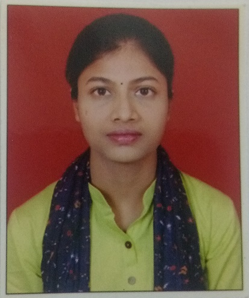

Post-Doctoral Researcher
Indraprastha Institute of Information Technology, Delhi (IIIT-Delhi). Supported by the Chanakya DST Fellowship, Ministry of Science and Technology.

Post-Doctoral Researcher, IIIT-Delhi
My research broadly centers on network security and anonymity systems, with a particular focus on traffic analysis and the detection of VoIP and cryptocurrency-mining traffic carried over anonymization tools such as VPNs, Tor, and IPSec.
Alongside this, I work on biometric authentication, an area rooted in my doctoral research on the security of iris recognition systems. That work examined vulnerabilities such as replay and database attacks on iris biometric systems and developed defenses against them.
I am also working on the security of electronic voting systems, with particular focus on problem of Demographic privacy in South Asian countries.
I am investigating gaps in consent management systems built for compliance with India's Digital Personal Data Protection (DPDP) Act, uncovering and addressing subtle, previously unseen errors in how user consent is captured, represented, and enforced.
Indraprastha Institute of Information Technology, Delhi (IIIT-Delhi). Supported by the Chanakya DST Fellowship, Ministry of Science and Technology.
Ph.D. in Computer Science, University of Delhi. Topic of my Defense Thesis: Securing iris biometric systems against replay and database attacks using deep learning approaches.
Keshav Mahavidyalaya, Deen Dayal Upadhyaya College and Hansraj College, University of Delhi. Taught Operating Systems, Computer Networks and Computer Graphics.
Aricent Technologies. 4.3 years across embedded systems and telecom protocol development.
Kanupriya Goswami, Arpana Sharma, Madhu Pruthi, Richa Gupta. International Journal of Information Technology, 15(1):315–324. ISSN 2511-2112. Indexed: SCOPUS.
Richa Gupta, Priti Sehgal. Pattern Recognition and Image Analysis, 30(4):786–794. ISSN 1555-6212. IF 0.6 (2025). Indexed: SCOPUS.
Richa Gupta, Priti Sehgal. Pattern Analysis and Applications, 22(2):717–729. ISSN 1433-755X. IF 2.6 (2025). Indexed: SCOPUS.
Richa Gupta, Priti Sehgal. International Journal of Biometrics, 8(2):145–178. ISSN 1755-831X. IF 0.7 (2025). Indexed: SCOPUS.
Richa Gupta, Rachit Bhandari, S Jithin, Bhargav Jani, Vinayak Sharma, Sambuddho Chakravarty. 21st International Conference on Availability, Reliability and Security (ARES), Linköping University, Sweden.
S Jithin, Richa Gupta, Reeshabh Kumar Ranjan, Shreyansh Nagpal, Mukulika Maity, Sambuddho Chakravarty. International Conference on Network and System Security (NSS), pages 319–346, Abu Dhabi, UAE. ISBN 978-981-96-3531-3.
Kanupriya Goswami, Arpana Sharma, Richa Gupta. 9th International Conference on Reliability, Infocom Technologies and Optimization (ICRITO), pages 1–5, Noida, India. ISBN 978-1-6654-1703-7.
Richa Gupta, Priti Sehgal. Cybernetics, Cognition and Machine Learning Applications: Proceedings of ICCCMLA 2020, pages 249–259, Goa, India. ISBN 978-981-33-6691-6.
Richa Gupta, Priti Sehgal. ICT for Competitive Strategies, pages 161–172, Udaipur, India. ISBN 978-100-30-5209-8.
Richa Gupta, Priti Sehgal. Soft Computing and Signal Processing: Proceedings of ICSCSP, pages 571–582, Telangana, India. ISBN 978-981-13-3393-4.
Richa Gupta, Priti Sehgal. International Conference on Intelligent Human Computer Interaction, pages 239–250, Allahabad, India. ISBN 978-303-00-4021-5.
Richa Gupta, Priti Sehgal. International Conference on Advances in Computing, Control, and Telecommunication Technologies (ACT), Hyderabad, India. ISBN 978-818-48-7599-7.
Punam Bedi, Saurabh Jain, Richa Gupta, Ravish Sharma, Archana Singhal. International Conference on Advanced Computing and Communications (ADCOM), pages 283–288, Guwahati, India. ISBN 0-7695-3059-1.
Richa Gupta, Priti Sehgal. Handbook of Research on Intelligent Data Processing and Information Security Systems, pages 95–115. IGI Global Scientific Publishing. ISBN 978-179-98-1290-6. Indexed: SCOPUS.
Arpana Sharma, Kanupriya Goswami, Vinita Jindal, Richa Gupta. Recurrent Neural Networks, pages 3–21. CRC Press. ISBN 978-100-33-0782-2. Indexed: SCOPUS.
University of Delhi — "Securing Iris Biometric System against Replay and Database Attacks using Conventional and Deep Learning Approaches."
University of Delhi.
Deen Dayal Upadhyaya College, University of Delhi.